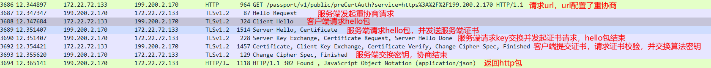

一、前言
1 | PS D:\work\src\local\cpp\openssl\1.1.1> .\apps\openssl.exe |
1. 下载
- 源码下载: https://www.openssl.org/source/
- github: https://github.com/openssl/openssl
- 二进制: https://wiki.openssl.org/index.php/Binaries
2. 编译
2.1. 二进制编译
1) linux
1 | --debug 编译带符号 |
2.2. 引擎编译
二、命令
1. 一些基本用法
1 | 枚举支持的加密套件 |
1.1. 国密openssl命令
1 | 列举支持的椭圆曲线 |
2. 证书
1.1. 颁发证书
(1) 国际密码标准（普密）
1. 颁发证书需要先生成一个颁发机构，也就是CA
1 | 新建目录防止混乱 |
2. 生成证书
1 | ######## 生成证书 ########### |
(2) 中国密码标准（国密）
0. 准备工作
1 | mkdir -p ssl_diy/private |
1. 生成用户证书
- 根据椭圆曲线生成密钥
1 | openssl_gm ecparam -genkey -name SM2 -out private/root-cakey.pem |
- 生成的密钥内容如下
1 | -----BEGIN EC PARAMETERS----- |
(3) 生成带拓展字段的证书
- 需要拷贝一份
/etc/ssl/openssl.cnf文件到自己的目录下 - 修改里面的字段，添加下面的字段
1 | [ v3_req ] |
- 然后在生成证书（非生成CA）的命令中加上
-config /path/to/openssl.cnf - 签名命令中加上
-config /path/to/openssl.cnf -extensions v3_req
1.2. 证书转换
csr（Certificate Signing Request）
- 通常为证书请求，PEM格式编码，包含证书请求信息和公钥，通常是没有签名的证书
crt/cer（Certificate）
- 通常为被ca机构签名后的证书格式，包含证书本身的信息（证书和公钥）和证书颁发机构的信息
- crt一般在linux上使用，cer一般在windows上使用
- 两种格式都可以使用pem编码或者der编码
pem（Privacy-Enhanced Mail）
- pem是储存证书和密钥的一种格式，一般是base64编码，以
-----BEGIN CERTIFICATE-----和-----END CERTIFICATE-----包裹
1 | pem格式转der格式 |
der（Distinguished Encoding Rules）
- der是一种二进制格式，通常用于在网络上传输证书。cer（Certificate）是DER编码的X.509证书的扩展名，通常用于Windows操作系统中
- der不能使用
CERTIFICATE REQUEST的pem转换，需要使用CERTIFICATE转换，也就是需要ca签名后的证书
1 | der格式转pem格式 |
p12
- p12是证书和私钥结合的证书，一般作为设备证书导入使用或者导入为浏览器证书做证书认证使用
1 | ######### 解开p12证书 ########## |
1.3. 验证证书
1 | 使用ca根证书校验客户端证书 |
1.4. 查看证书
- oid的对照关系可以看
node-forge/lib/oids.js
1 | 打印证书内容，下面命令传入的是ascii字符版证书 |
3. 客户端 openssl s_client
3.1. 选项
-engine <name>: 使用引擎，给一些使用硬件加密的代码使用-ssl_client_engine <name>: 使用引擎给客户端需要证书操作时-connect <ip:port>: 连接地址，仅支持ip+端口，不支持url-msg: 显示协议相关的消息体-state: 显示当前ssl的阶段-debug: 额外显示一些输出-tls1_1: 使用tlsv1.1进行通信-cipher <ciphers>: 指定tlsv1.2及以下的套件列表-ciphersuites <ciphers>: 指定tlsv1.3套件列表-key <keyPath>: 如果证书-cert没有带key，需要指定私钥-cert <certPath>: 证书，pem格式-servername <serverName>: 添加tls的extension字段server_name-keylogfile <keyfile>: 将预主密钥保存到文件
3.2. 示例用法
1 | -connect 127.0.0.1:7777 连接127.0.0.1:7777 |
4. 服务端 openssl s_server
-accept <port>: 监听端口-tls1_1: 只使用tlsv1.1-cipher <ciphers>: 指定tlsv1.2及以下的套件列表-ciphersuites <ciphers>: 指定tlsv1.3套件列表-state: 显示当前ssl的阶段-CAfile <caPath>: ca根证书路径，用于校验对端证书，pem格式-key <keyPath>: 如果证书-cert没有带key，需要指定私钥-cert <certPath>: 证书，pem格式-verify int: 开启校验对端证书-Verify int: 强制要求对端有证书，并开启校验-verify_return_error: 默认情况下，上面的而校验失败了只会打印日志后继续，加了此选项才会断开连接-WWW: 当前目录作为根目录进行http服务，最简单的http服务，必须输入全路径才能处理包括index.html
4.2. 示例用法
1 | -accept 7777 监听7777端口 |
三、openssl库
1. 引擎开发指南
1.1. 简介
- 引擎库是openssl给一些硬件设备提供的一个标准化开发接口，可以通过编写一些硬件接口对接openssl实现ssl过程中使用硬件进行加解密等操作
- 一般引擎库再windows上放置位置为
C:\Program Files (x86)\OpenSSL\lib\engines-1_1\xxx.dll文件，加载时会根据id找同名dll文件 - 实现上对于企业用户，使用引擎库可以作为ukey来证书认证或国密加密认证等
- ukey不管是普密还是国密，都是无法导出私钥的，证书的认证流程需要使用私钥对证书进行签名，再发送给服务端进行解析，所以引擎库里面不仅需要导出证书接口，还需要实现证书的签名接口，使用ukey的签名接口进行签名
- skf转openssl结构体参考仓库: https://github.com/guanzhi/GmSSL
1.2. 基础接口
- 加载引擎必须要定义的下面几个函数
1 | /******************** 这个函数是引擎设置的最基础的函数 ********************/ |
- 编译出来的引擎库名字和设置中的
engine_id要一致
1.3. 编译
- 在openssl的源码根目录下新建一个文件夹放引擎代码，就假设是
my-engine
1 | my-engine |
makefile
- makefile暂时只支持linux的gcc编译
1 | CC = gcc |
cmake
- 编写CMakeLists.txt，在windows上使用msvc编译的openssl主程序就需要使用msvc编译引擎
- linux就使用gcc即可
1 | # cmake最小支持版本3.8 |
1.4. 加载引擎
libcurl调用
- curl引擎设置如下
1 | size_t curlWriteFunction(void *ptr, size_t size /*always==1*/, size_t nmemb, |
1.5. 测试命令
1 | 服务端监听命令，重点是-CAfile需要使用ukey里面的证书对应的ca根证书 |
1.6. 使用skf接口实现rsa引擎
1) 需要用到的skf引擎的关键函数
1 | // 导出证书 |
2) skf导出数据到openssl结构体的工具函数
1 | // 将导出的公钥结构体设置到rsa结构体的公钥部分 |
3) openssl中需要用到的一些函数和结构体讲解
1 | /********** include/openssl/rsa.h **********/ |
rsa_method是非导出的，具体的内容如下
1 | // crypto/rsa/rsa_local.h |
- openssl的默认
rsa_method如下
1 | // crypto/rsa/rsa_ossl.c |
4) 结合skf和openssl的原理讲解一下
- 使用skf引擎一般是使用ukey进行证书双向认证，双向认证的流程解析查看 双向认证流程
- ukey保证安全性，私钥是不允许导出的，所以私钥签名这一步需要自己实现
- 证书存在于ukey中，所以需要修改加载证书的函数
- 私钥解密不需要，因为双向认证过程中没有服务端使用客户端上传的公钥加密的过程
- 公钥加密在客户端角度是使用服务端的公钥加密上传的数据，这里软件实现即可，不需要ukey的硬件实现
- 公钥解密同样软件实现即可
5) 引擎设置代码
1 | static int skf_load_rsa_client_cert(X509** pcert, EVP_PKEY** ppkey) { |
1.7. 使用skf接口实现sm2国密引擎
2. 随机数生成算法
- 需要链接
-lcrypto - 内部会获取
/dev/urandom、pid、tid、时间作为种子，所以相同种子也会有不同随机数
1 |
|
3. 错误信息输出
1 | ret = RSA_verify(NID_sha1, testmd, 20, sig, len, rsa); |
4. rsa签名与校验
RSA原理先看 RSA算法
4.1. 接口和结构体
1 | // openssl/rsa.h |
- 其中
m和m_length是原文数据 sigret和siglen是加密后的数据type定义了摘要算法类型，这里是重点，传入的m并不会直接进行加密，而是先经过摘要计算一次，在进行加密rsa是算法结构体，在计算过程中可以使用到，在不同的函数需要的结构体不一样，下面讲一下算法结构体
1 | // include/openssl/ossl_typ.h |
4.2. RSA_sign源码解析
1 | // crypto/rsa/rsa_sign.c |
4.3. RSA_verify源码解析
1 | // crypto/rsa/rsa_sign.c |
四、握手流程分析
1. 前置知识
1.1. ssl握手的几个关键点
- 密钥交换: 使用RSA密钥交换或ECDHE交换算法
- 身份认证: 要求服务端有自己的证书，并且私钥自己持有，过程中会使用私钥签名一段数据给对端使用公钥验签
- 对称加密: 上面密钥交换的最后会生成对称加密密钥，作为ssl后续数据传输的加密密钥
- 摘要算法: 用于保证数据完整性的算法
1.2. rsa密钥交换
- 客户端产生预主密钥，使用服务端下发的公钥加密后发给服务端
- 服务端拿到后，用私钥解密
- 双方使用客户端随机数、服务端随机数、预主密钥产生会话密钥通信
问题
- 服务端的私钥如果泄漏，会导致预主密钥泄漏，就可以推断出会话密钥
1.3. ECC密钥交换
- 同rsa，客户端产生预主密钥，使用服务端下发的公钥加密后发给服务端
1.4. ECDH密钥交换
- 本质上是根据ECC椭圆曲线的算法
- 双方首选选择一个椭圆曲线和基点G
- 一方生成随机数 $d_1$ 作为私钥，发送给另一方公钥 $Q_1 = d_1G$
- 同理对方生成随机数 $d_2$ 作为私钥，发送给另一方公钥 $Q_2 = d_2G$
- 由于当前算力无法推出 $d_1$ 和 $d_2$，所以双方可以直接计算出相同的一个值 $d_1d_2G$ 作为预主密钥
如何解决rsa的问题
- 中间数据传输只有双方的公钥，无法计算出各自的私钥，也无法推断预主密钥
- 就算一方私钥泄漏，也不会影响下一次连接，因为私钥是每次重新生成的
1.5. 双证书体系
- 双证书一般是ukey里面放了一个加密证书和一个签名证书
- 签名证书只能用于签名数据，加密证书是用来加密或生成对称加密密钥使用的
1) 客户端ukey
- 做双向认证时，在Certificate请求构造需要提交签名证书和加密证书，签名证书在加密证书前面
- 由于不存在服务端使用客户端公钥加密一段数据给客户端自己解密使用，所以加密证书是用来生成对称加密密钥使用的
- RSA和ECC密钥交换，由于预主密钥是客户端直接生成给到服务端的，所以不使用加密证书
- ECDHE密钥交换，只能是ECC的加密证书才参与生成
- DHE密钥交换，只能是RSA的加密证书才参与生成
2. 重协商流程
- 199.200.2.170是服务端ip
3. tls1.2 rsa密钥交换握手过程 Cipher Suite: TLS_RSA_WITH_AES_256_GCM_SHA384 (0x009d)
- 下图使用openssl命令测试得到，生成的test.log可以放到wireshark解密
1 | 服务端 |
- 使用RSA做密钥交换，使用RSA做身份认证，使用AES256-GCM做对称加密，使用SHA384做摘要算法
1 | => openssl ciphers -V | grep -i '0x00,0x9d' |
- 密钥交换就是RSA的密钥交换过程
- 身份认证在服务端下发Certificate时，客户端会根据是否授信防中间人攻击；而预主密钥又使用了服务端的公钥进行加密传输，只有持有私钥的服务端才能拿到预主密钥，这里也是身份认证的关键
- 对称加密和摘要算法就都一样
4. TLS1.2 ecdhe握手流程 Cipher Suite: TLS_ECDHE_RSA_WITH_AES_256_GCM_SHA384 (0xc030)
- 使用openssl命令测试，生成的test.log可以放到wireshark解密
1 | 服务端 |
1 | => openssl ciphers -V | grep -i '0xc0,0x30' |
- 使用ECDHE进行密钥交换，RSA做身份认证，AES256-GCM作为对称加密套件，SHA384作为摘要算法
- ECDHE_RSA是在ECDHE上加了RSA的签名（身份验证），服务端下发keyExchange时会把公钥用RSA私钥签名一下发下来，客户端会使用公钥验证一下签名正确
- 密钥交换就是ECDHE的密钥交换过程
- 身份认证在服务端下发Certificate时，客户端会根据是否授信防中间人攻击；在服务端下发
Server Key Exchange时会使用私钥进行签名，客户端使用下发的公钥进行验签就保证了私钥是服务端持有的，其他人无法进行签名 - 对称加密和摘要算法就都一样
5. TLS1.3 握手流程 TLS_AES_256_GCM_SHA384(0x1302)
- 使用openssl命令测试，生成的test.log可以放到wireshark解密
1 | 服务端 |
1 | => openssl ciphers -V | grep '0x13,0x02' |
- 使用ECDHE进行密钥交换，AES256-GCM作为对称加密套件，SHA384作为摘要算法
- 上面抓包是解密的数据，所以能看到内容，正常
Change Chipher Spec后，后面的数据都是加密的
- 密钥交换就是ECDHE的密钥交换过程
- 身份认证在服务端下发Certificate时，客户端会根据是否授信防中间人攻击；在服务端下发
Certificate Verify时会使用私钥对前面的握手信息进行签名，客户端验签通过说明是持有私钥的服务端下发的数据，做身份认证 - 这里和tls1.2中不一样的地方就是tls1.3没有
Server Key Exchange请求了，DH参数在Server Hello中就下发了，这时没有证书信息下发，所以不进行签名。可以进行加密传输后，再使用Certificate Verify来保证私钥是服务端持有的 - 对称加密和摘要算法就都一样
5.1. 握手过程解释
- 在client hello阶段就已经客户端选择好密钥交换算法并给出了自己的公钥信息
- client hello中的version虽然写的tls1.2，是因为历史原因，只能写tls1.2，实际支持版本是拓展中的supported_versions字段给出的
- 由于很多服务器或网关设备写死了tls版本必须是tls1.2，tls1.3为了推行而不改变网络部署，伪装到tls1.2中进行传输，所以version为1.2
- 支持tls1.3的客户端在client hello中一定会有supported_versions的拓展
- server hello阶段给出了服务端的公钥信息，这个时候双方都持有了对方的公钥
- server hello中的version虽然写的tls1.2，也是因为历史原因，只能写tls1.2。具体选择的版本要看后面拓展的supported_versions的回复
- 不支持tls1.3的服务端不会回复supported_versions的拓展
- 使用双方公钥和双方随机数就可以计算出预主密钥，这一步就已经可以加密传输了
- 这里比tls1.2少了一个rtt，加快速度
- 使用ecdh进行密钥交换，也比rsa更加安全
- tls1.3不再支持rsa的密钥交换算法了，默认使用ecdhe的方式交换
- 身份认证是在
Certificate Verify中进行，根据证书的算法使用私钥对握手数据进行签名，客户端使用公钥校验证明是服务端持有私钥
5.2. psk_key_exchange_modes
psk_key_exchange_modes是一种TLS协议中的扩展，用于指定预共享密钥（PSK）交换的模式。根据TLS 1.3规范，psk_key_exchange_modes共有4种模式，分别为：
- PSK with (EC)DHE key establishment：使用预共享密钥和(Elliptic Curve)有限域Diffie-Hellman(ECDHE)密钥交换。
- PSK with (EC)DHE key establishment, and PFS：使用预共享密钥和(Elliptic Curve)有限域Diffie-Hellman(ECDHE)密钥交换，并提供前向保密性（Perfect Forward Secrecy，PFS）。
- PSK with (EC)DHE key establishment, and PFS with early data：使用预共享密钥和(Elliptic Curve)有限域Diffie-Hellman(ECDHE)密钥交换，并提供PFS和早期数据传输。
- PSK without (EC)DHE key establishment (i.e., 0-RTT)：仅使用预共享密钥进行握手，不进行(Elliptic Curve)有限域Diffie-Hellman(ECDHE)密钥交换，从而实现0-RTT握手。
6. 双向认证流程
6.1. tls1.2的rsa证书双向认证
1 | 服务端命令 |

1) 防中间人处理
- 中间人一般是使用ssl代理，搭建ssl服务器，客户端是和代理服务器进行握手，代理服务器作为客户端和服务端进行握手，防中间人就是确认中间没有ssl代理服务器
- 公开的信息（抓包都能拿到的）: 服务端证书（包含公钥、证书签名信息）、客户端证书（包含公钥、证书签名信息）
- 签名的信息: 客户端使用私钥签名握手数据
- 加密的信息: 客户端将预主密钥通过服务端证书的公钥加密
(1) 客户端如何确认服务端是没问题的（防服务端伪造）
- 服务端证书使用本地授信CA验签，说明这个证书是认证的。中间人的代理服务器的证书是不授信的，不过证书是公开的，中间人可能进行重放
- 预主密钥使用服务端证书的公钥加密，持有私钥的服务端才能解密，说明这个证书确实是服务端持有的。这里代理服务器就无法进行解密了，仅证书持有者才能解密
(2) 服务端如何确认客户端是没问题的（防客户端伪造）
- 客户端提交的证书服务端会使用本地授信的CA验签，说明证书是认证的。中间人的代理服务器的证书是不授信的，不过证书是公开的，中间人可能进行重放
- 客户端会使用证书私钥将握手数据的签名，服务端使用客户端证书的公钥验签通过，说明证书确实是服务端持有的。这里代理服务器就无法进行签名了，仅证书持有者才能签名
6.1. tls1.3的rsa证书双向认证
1 | 服务端命令 |

五、国密相关
1. 知识扫盲
1.1. 算法
- sm1: 对称加密算法，本身闭源，需要使用ukey硬件中的接口实现
- sm2: 非对称加密算法，本身基于ecc椭圆算法实现，可以使用软件进行实现
- sm3: 摘要算法
- sm4: 对称加密算法，可以使用软件实现
1.2. 算法套件
ECC-SM4-SM3
算法可以类比TLS_RSA_WITH_AES_256_GCM_SHA384，其中
- ECC对应RSA，密钥交换算法，由客户端生成预主密钥，使用ECC椭圆算法用服务端公钥加密
- SM4对应
AES_256_GCM，对称加密算法，为握手完成后的数据传输阶段的算法 - SM3对应
SHA384，摘要算法
ECC-SM1-SM3
仅将SM4换成SM1的闭源实现，其他都一样
六、工程开发
1. cmake
1.1. 引入cmake使用
1 | # 设置find之后，下面几个变量会进行赋值，引入到library和include里面即可 |
1.2. 系统安装了多个openssl版本，如何指定版本
- 在cmakecache里面指定一下下面几个值，重新生成一下就好了
1 | OPENSSL_CRYPTO_LIBRARY:FILEPATH=/usr/lib/openssl-1.1/libcrypto.so |
2. 编译
小技巧和踩坑记
1. 使用openssl命令模拟https请求
- https就是在ssl握手的基础上，发送http请求
- http请求的原生格式如下
1 | POST /xxx/aaa/ddd HTTP/1.1 |
- 当openssl连接上服务端的端口后，将上述文本复制到命令行，回车即可发送请求
- 注: content-length是要求和正文内容长度一致，需要注意换行所占字节数
2. 让浏览器信任自己颁发的证书
1) windows
- 只需要将CA导入到ie的受信任的根证书颁发机构就好了
2) linux
archlinux
ubuntu
其他问题
(1) 自己颁发的证书，chrome导入了ca还是不授信
- 新版chrome加了一个安全选项，需要存在SAN（Subject Alternative Name）字段才可以授信
- 操作具体见 生成带拓展字段的证书
- 格式类似下面
1 | ... |
- DNS字段需要和访问的域名对应才行